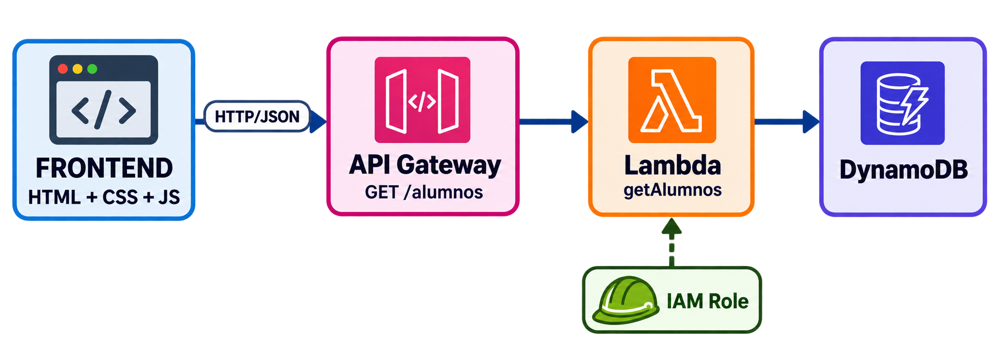
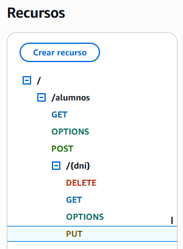
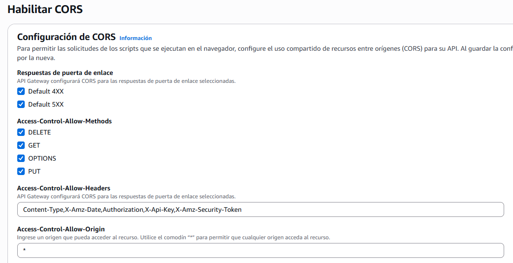
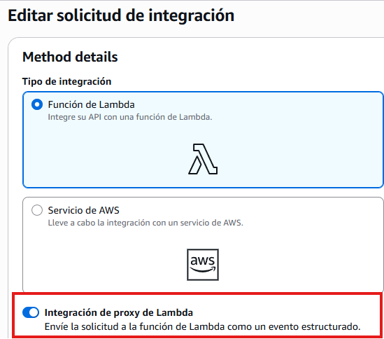
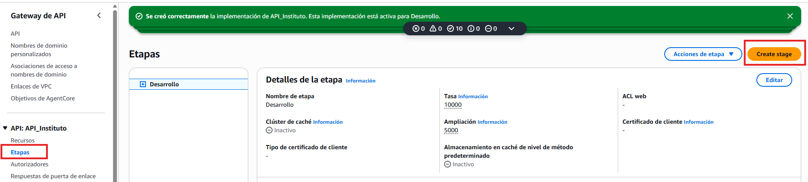
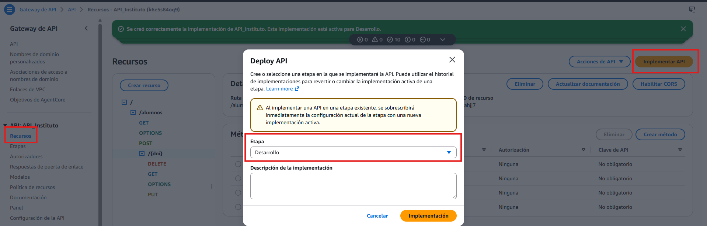
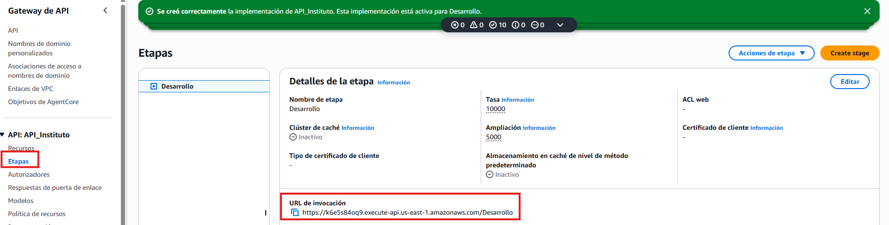

APIGW + Lambda + DynamoDB.¶
Objetivo.¶

Vamos a generar una web que hará llamadas a una API GW, que a su vez le pasará las llamadas a una función lambda que hará nuestro trabajo de servidor y almacenará los datos en una base de datos (DynamoDB).
¿Por qué no enlazar la web directamente con DynamoDB?¶
Seguridad:¶
-
Evitas cargar la autentificación a la base de datos en el javascript, por tanto en el navegador de cada cliente y en consecuencia éste tendría acceso al código.
-
Aunque hicieses la autentificación de alguna forma "segura" estamos dando acceso a los clientes directamente a la base de datos, si dicha base de datos permite funciones GetItem, DeleteItem, PutItem, etc podría dar pie a que desde el cliente se lanzaran dichas llamadas.
¿Por qué usar una API GW y no directamente llamadas a funciones lambda desde la web?¶
-
API Gateway proporciona llamadas HTTP para que los clientes puedan utilizar las funcionalidades programadas en lambda (por ejemplo GET Alumnos).
-
Un programador de la parte cliente tiene acceso a las funcionalidades sin tocar el código del servidor y sin saber cómo se hacen las llamadas a base de datos, dónde se almacena la información, ni qué tecnología se usa en el backend. Es decir se se separa totalmente la parte cliente de la del servidor.
API Gateway permite:¶
-
Seguridad: autenticar/autorizar clientes (JWT) y limitar el tráfico/peticiones.
-
Punto de entrada centralizado: Es la puerta de entrada para tus servicios, organiza el tráfico, simplifica el mantenimiento y oculta la estructura interna de tu backend.
-
Control de versiones/entornos: Facilita la gestión de versiones y la separación de entornos (desarrollo, pruebas o producción).
-
Coste por peticiones: Se paga por número de peticiones.
-
Posibilidad de almacenamiento caché: Mejora el rendimiento y disminuye la carga del backend.
-
Flexibilidad: Con una misma APIGW puedes dar servicio a diferentes tipos de clientes: una página web, una aplicación para iOS, otra para Android, etc.
Práctica Guiada.¶
DynamoBD.¶
-
Crea una tabla, llámala como quieras, por ejemplo alumnos.
-
Únicamente tendrá una clave principal llamada dni de tipo string.
Lambda.¶
-
Crea una función lambda para Python y recuerda asociarle el LabRole como "Rol de Ejecución".
-
Crea una variable de entorno "TABLE_NAME" que apunte a tu tabla de DynamoDB.
-
Añade el código y crea Test para comprobar que funciona correctamente y tiene conectividad con la tabla de DynamoDB.
Esto son ejemplos de test para la tabla "alumnos".
#Ejemplos para la tabla alumnos.
{
"httpMethod": "POST",
"resource": "/alumnos",
"path": "/alumnos",
"headers": { "Content-Type": "application/json" },
"pathParameters": null,
"queryStringParameters": null,
"isBase64Encoded": false,
"body": "{\"dni\":\"12345678A\",\"nombre\":\"Lucía\",\"apellidos\":\"Ferrer Blasco\",\"edad\":16,\"optativa\":\"Robótica\"}"
}
{
"httpMethod": "GET",
"resource": "/alumnos",
"path": "/alumnos",
"headers": {},
"pathParameters": null,
"queryStringParameters": null,
"isBase64Encoded": false,
"body": null
}
{
"httpMethod": "GET",
"resource": "/alumnos/{dni}",
"path": "/alumnos/12345678A",
"headers": {},
"pathParameters": { "dni": "12345678A" },
"queryStringParameters": null,
"isBase64Encoded": false,
"body": null
}
{
"httpMethod": "PUT",
"resource": "/alumnos/{dni}",
"path": "/alumnos/12345678A",
"headers": { "Content-Type": "application/json" },
"pathParameters": { "dni": "12345678A" },
"queryStringParameters": null,
"isBase64Encoded": false,
"body": "{\"edad\":17,\"optativa\":\"Inteligencia Artificial\"}"
}
{
"httpMethod": "DELETE",
"resource": "/alumnos/{dni}",
"path": "/alumnos/12345678A",
"headers": {},
"pathParameters": { "dni": "12345678A" },
"queryStringParameters": null,
"isBase64Encoded": false,
"body": null
}
API REST (API GW).¶
-
Crear dos recursos /alumnos y /alumnos/{dni}.
-
Dentro de cada recurso añadimos los métodos necesarios con la integración de proxy de Lambda activada:
GET /alumnos: Para listar todos los alumnos.POST/alumnos: Para crear un nuevo alumno.DELETE/alumnos/{dni}: Eliminar un alumno en concreto.GET/alumnos/{dni}: Buscar un alumno en concreto.PUT/alumnos/{dni}: Editar un alumno.

- Habilitar CORS en ambos recursos para todos sus métodos.

IMPORTANTE.
- Recuerda crear cada método con la integración de proxy de Lambda.

- Crea una etapa, puedes llamarla como quieras, por ejemplo: Desarrollo.

- Despliega la API y asóciala a la etapa creada en el apartado anterior.

- Guarda el enlace de llamada a tu API REST:

Crea un S3 (web estática).¶
Vamos a almacenar nuestra web estática en un S3:
-
Edita el "index.html" para que apunte a tu API GW (DEFAULT_API_BASE_URL).
-
Hacer que el S3 sea público, con alojamiento web activad y con una política de permisos permita únicamente las funciones GetObject().
Troubleshoot.¶
Para ayudarte a procesar los errores acuérdate de:
-
Mirar la consola y network de la ventana de desarrollador en el navegador (F12).
-
Mirar en Lambda la parte de monitorización de CloudWatch con los errores e invocaciones recibidas.